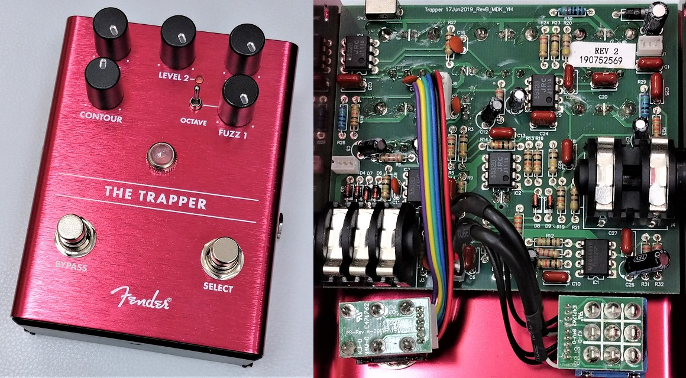
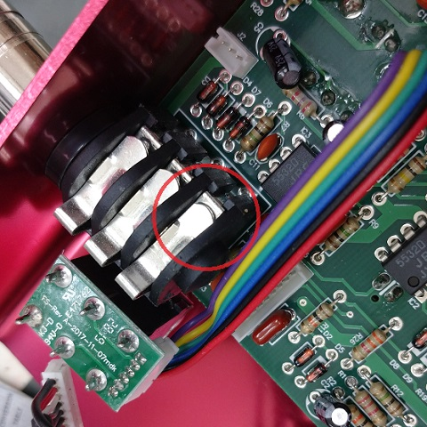
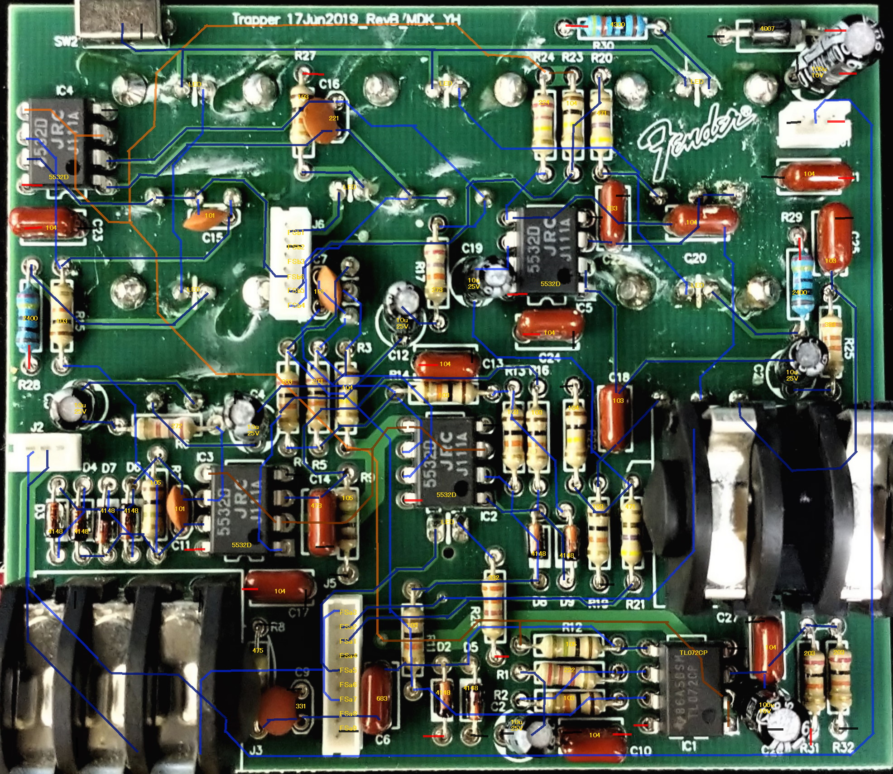
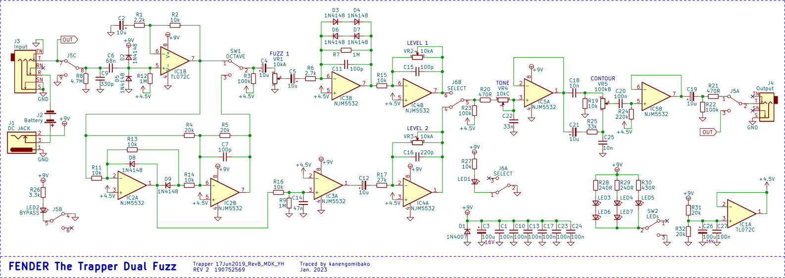
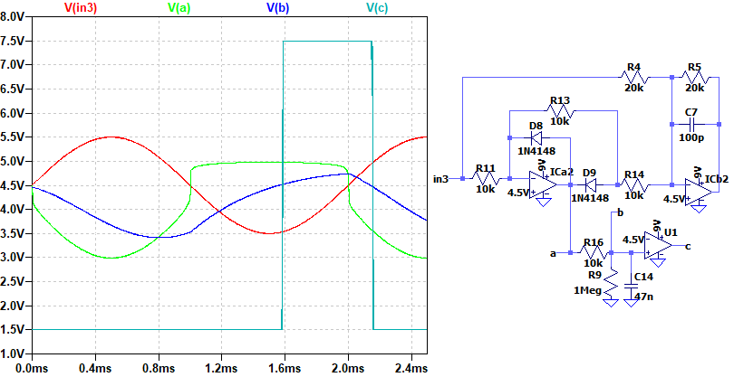
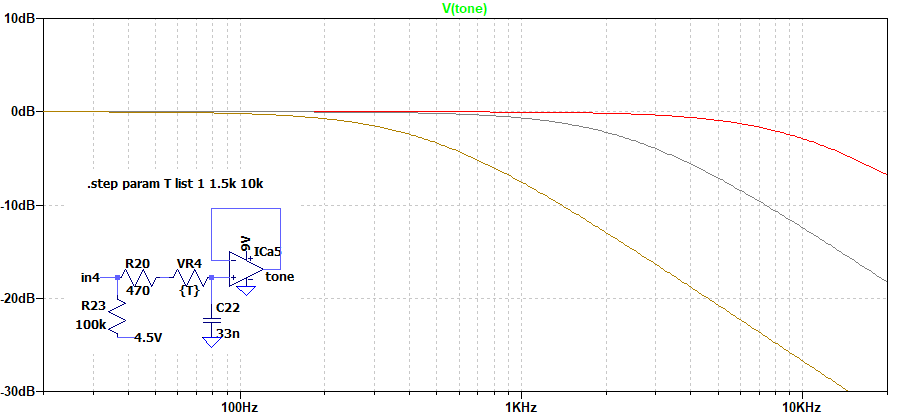
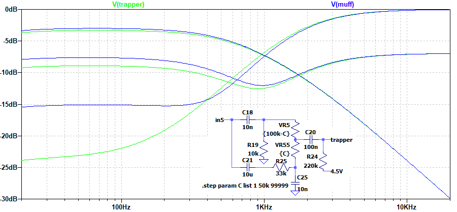

Fender The Trapper Dual Fuzz 修理・解析
2023年02月04日 カテゴリー：修理・改造・解析

音が出ない状態のFender The Trapper Dual Fuzzを手に入れたので、修理し解析しました。KiCadとLTspiceの回路図データ、基板画像はGitHubにあります。
【修理】
バイパス音・エフェクト音共に出ないので、バイパススイッチの故障を疑いましたが異常ありません。入力から確認していこうとしたところ、早速入力ジャックのTIP端子がおかしいことに気づきました。ジャックにプラグを挿し込んだときに浮くはずの所が、もう一つの端子（グラウンド）に接触したままになっていました。

曲がり具合を調整すると音が無事に出るようになり、修理完了です。
▽基板画像

全てスルーホール部品で、フローはんだ付けで実装してあると思われます。4層基板ではあるものの、中間層は電源とグラウンドのみに見えます。もしかしたら隠れた配線があるかもしれませんが、実測とトレースした回路のシミュレーションは合っているのでおそらく大丈夫でしょう。
▽回路図

ファズなのでトランジスタが使われているのかと思いきや、オペアンプのみです。電源部にはフィルムコンデンサが多数あり、オペアンプの近くにバイパスコンデンサ（パスコン）として配置されています。
FUZZ1は普通のダイオードクリップですが低音域がほとんどカットされておらず、ビッグマフ的な音色を狙ってあるのかもしれません。オクターブ音生成部は全波整流（絶対値）回路で、波形のマイナス側が反転する形になり、周波数が2倍になります（参考→全波整流回路の動作原理）。TONEはRATのFILTER、CONTOURはBIG MUFFのTONEと同じタイプとなっています。
FUZZ2側のIC3Aには帰還抵抗がなく、最大限の増幅をするということになります。すなわち、基準電圧（4.5V）より大きければ正電源（9V）付近に、小さければ負電源（0V）付近になるという矩形波が生まれます（参考→コンパレータ）。R9は、電位をズラしてノイズに反応しにくくするためのものだと思われます。
▽シミュレーション
- FUZZ 2

デューティ比が偏った矩形波となっており、Fuzz Faceの出力波形に似ています。このような波形がファズらしい音色が生まれる一因のようです。
- TONE

単純なローパスフィルタで、ProCo RAT（VR4 100kΩ、C22 3.3nF）とほぼ同じとなります。Fender Pugilist Distortionでも同様のトーン回路です。
- CONTOUR

ローパスフィルタとハイパスフィルタを組み合わせたトーンコントロールです。比較として、C18を4nF、R19を33kΩにしたV2 "VIOLET" RAMS HEAD BIG MUFF PIのトーンを載せています。